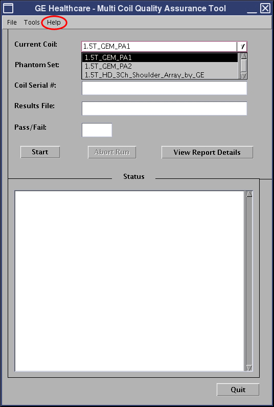

If successful, it will automatically list the currently connected coil in the Current Coil field. Select the coil to be tested from the drop-down list.
If the coil is not recognized, a message displays indicating the coil needs to be configured. (The Help menu will pop up a new window to display the MCQA setup procedure for the GEM coils only.)
Illustration 4: Current Coil Field
